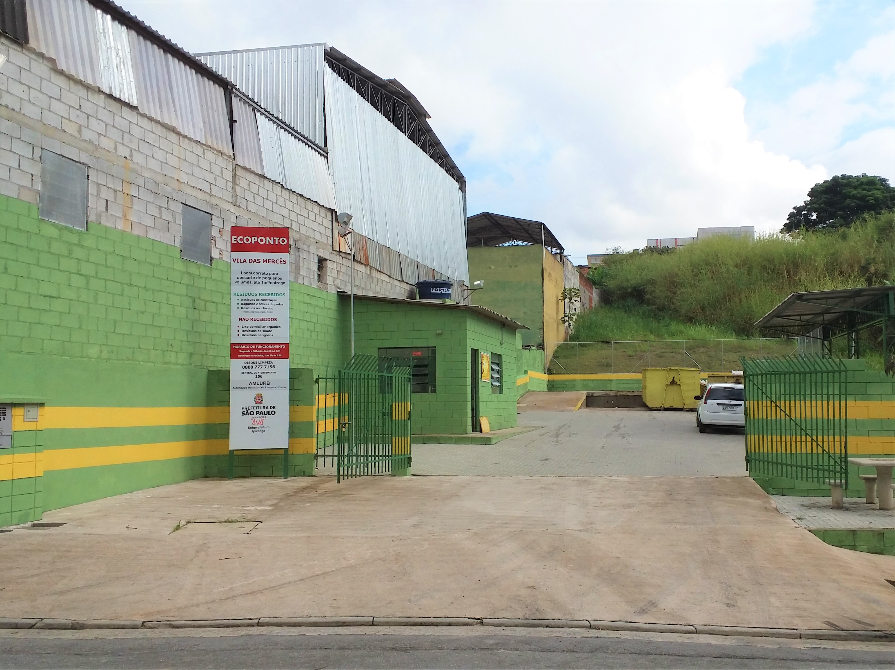
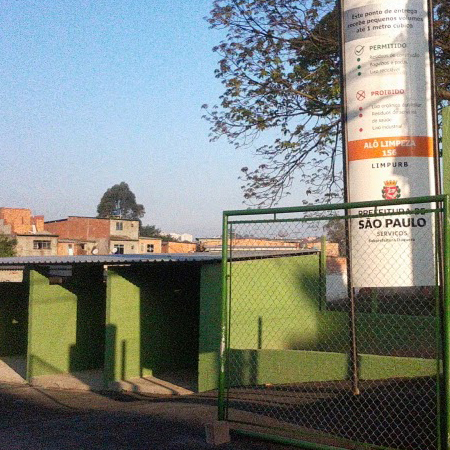

RECICLE+
Ecopontos na Cidade de São Paulo
O entulho gerado por construções, demolições e pequenas reformas em prédios ou residências,
que são jogados de maneira ilegal em avenidas, ruas e praças,
têm gerado sérios problemas ambientais para a cidade de São Paulo e para a população, que está perdendo espaços de lazer,
além de criar desvalorização imobiliária e criadouros de insetos e ratos.
Para combater este tipo de crime que pode gerar uma multa de R$ 16.003,23 mil (Lei nº 13.478/02, artigo 185)
e que hoje estão ocorrendo com certa frequência devido às provas em vídeos (celular e câmeras residências).
A Prefeitura de São Paulo, por meio da Secretaria Municipal de Serviços (SES),
criou os ECOPONTOS para a DEPOSIÇÃO REGULAR E GRATUITA dos resíduos da construção e demolição de pequenos geradores,
além de facilitar e incentivar a reciclagem desses materiais.

Como funciona:
Os Ecopontos são locais de entrega voluntária de pequenos volumes de entulho (até 1 m³), grandes objetos (móveis, poda de árvores etc.) e resíduos recicláveis. Nos Ecopontos, o munícipe poderá dispor o material gratuitamente em caçambas distintas para cada tipo de resíduo. A intenção da Prefeitura de São Paulo é aumentar o número de unidades.
Horário de funcionamento:
De segunda à sábado – 6h às 22h -
Domingos e Feriados – 6h às 18h

O que recebem :
Móveis Velhos, Madeiras, Podas, Pó de Serra, Tacos, Retalhos de Madeira, Grama com Terra e Folhagem, Materiais Recicláveis, Entulho (até 1m³).
O que NÃO recebem:
Tintas, Solventes, Gessos, Lâmpadas, Pilhas, Baterias e Eletrodomésticos.
Multa:
O descarte irregular é considerado crime ambiental, e está sujeito a multa de R$ 16.003,23 mil em caso de flagrante, conforme Lei nº 13.478/02, artigo 185.
© RECICLE+ Sustentabilidade